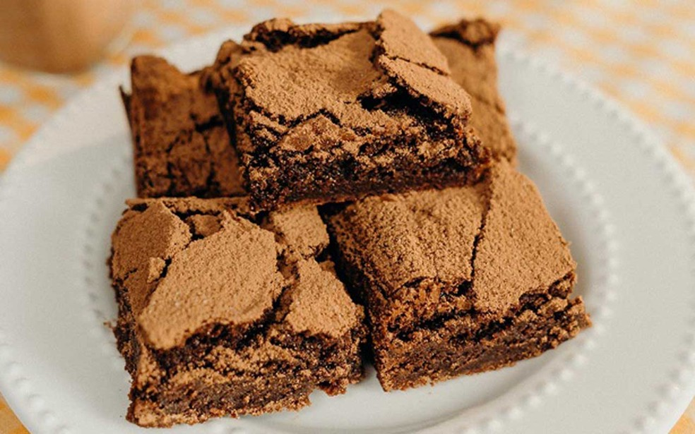

Conheça meus gostos culinarios!
Aqui você conhecerá meus gostos culinarios e com quem eu compartilharia esses momentos!
Para começar, vou apresentar receitas que eu gosto!
Aqui você conhecerá meus gostos culinarios e com quem eu compartilharia esses momentos!
Para começar, vou apresentar receitas que eu gosto!
A primeira receita é uma deliciosa torta de batata, que combina perfitamente com um almoço de família

Pudim de leite, apesar de eu não gostar muito decidir colocar na lista por ser uma receita que faço muito bem!

Diferente do pudim o Brownie de chocolate eu não sei fazer, mas adoro comer!
De agora em diante, comidas que nunca comi, mas tenho vontade!
Chilli com carne, adora comidas apimentadas, mas essa tem um gostinho especial dos desenhos animados.

Apesar de parecer um simples sorvete, eu sinto que tem algo especial.

E por fim o petit gateu, esse simplesmente eu tenho vontade de saber como é um bolo mal passado!